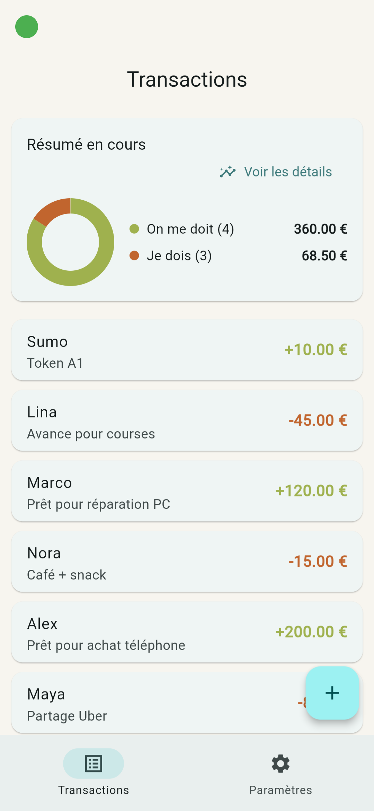

Organisez vos projets et vos finances en équipe
DueTrack est une application moderne conçue pour les équipes agiles. Suivez vos tâches, gérez vos dettes et transactions, et collaborez en temps réel avec une interface intuitive.
Commencer avec DueTrack🚀 Pourquoi choisir DueTrack ?
📋 Gestion de Projets Agile
Créez, attribuez et suivez les tâches de votre équipe avec des tableaux Kanban intuitifs et personnalisables.
💰 Suivi Financier Transparent
Gérez les prêts, dettes et transactions entre membres de votre équipe de manière claire et sécurisée.
👥 Collaboration en Temps Réel
Travaillez ensemble avec des notifications instantanées, des commentaires et un historique complet des activités.
🖼️ Découvrez l'interface DueTrack

Une interface épurée pour une gestion optimale
Prêt à simplifier votre gestion ?
Rejoignez des milliers d'utilisateurs satisfaits dès aujourd'hui.
Accéder à DueTrack